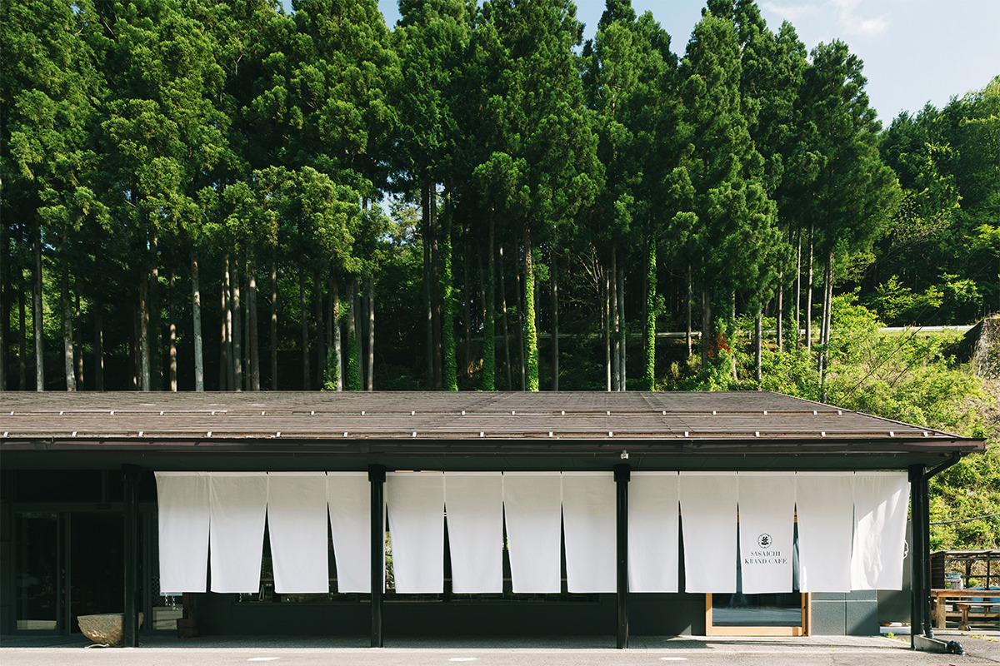
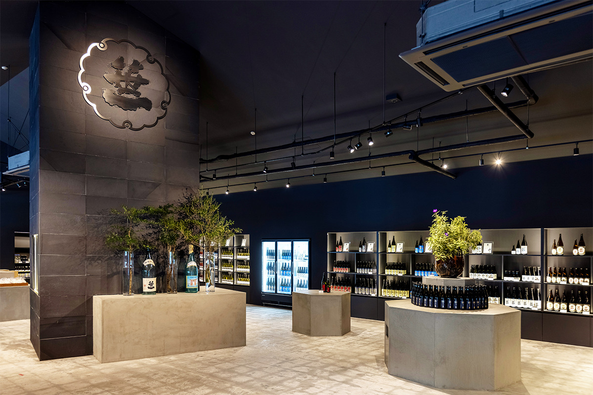
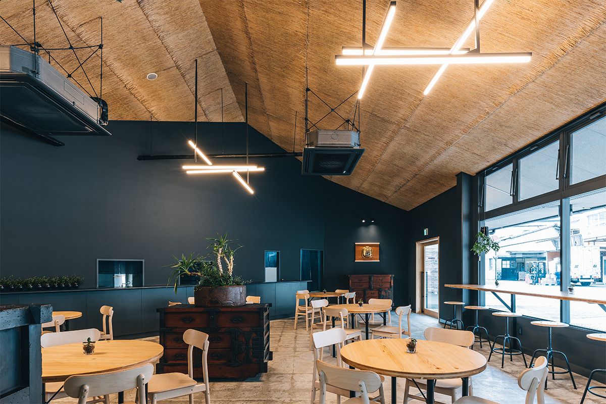
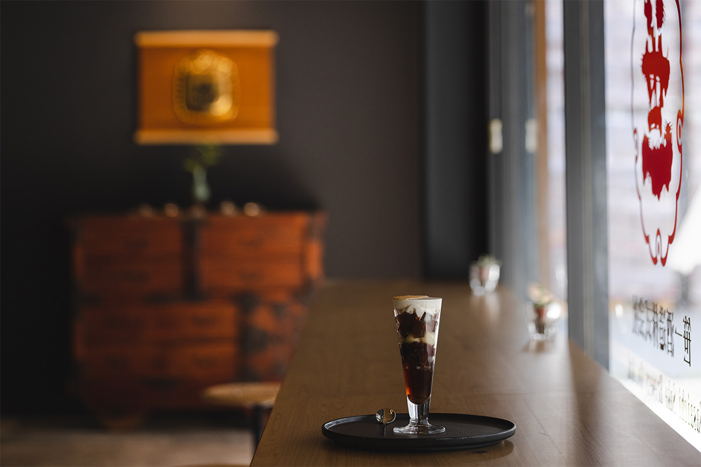
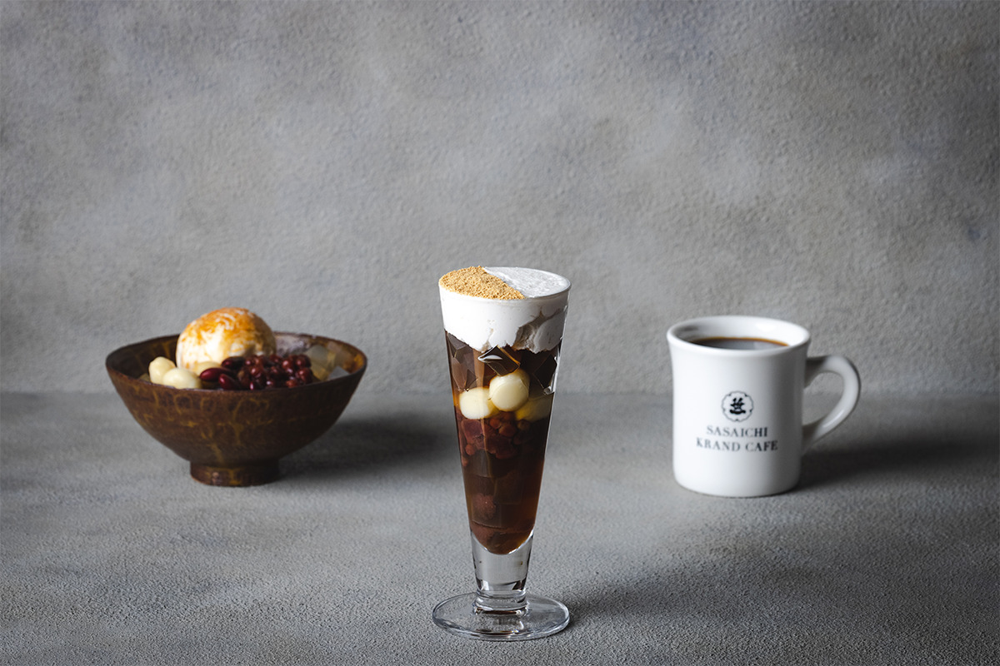
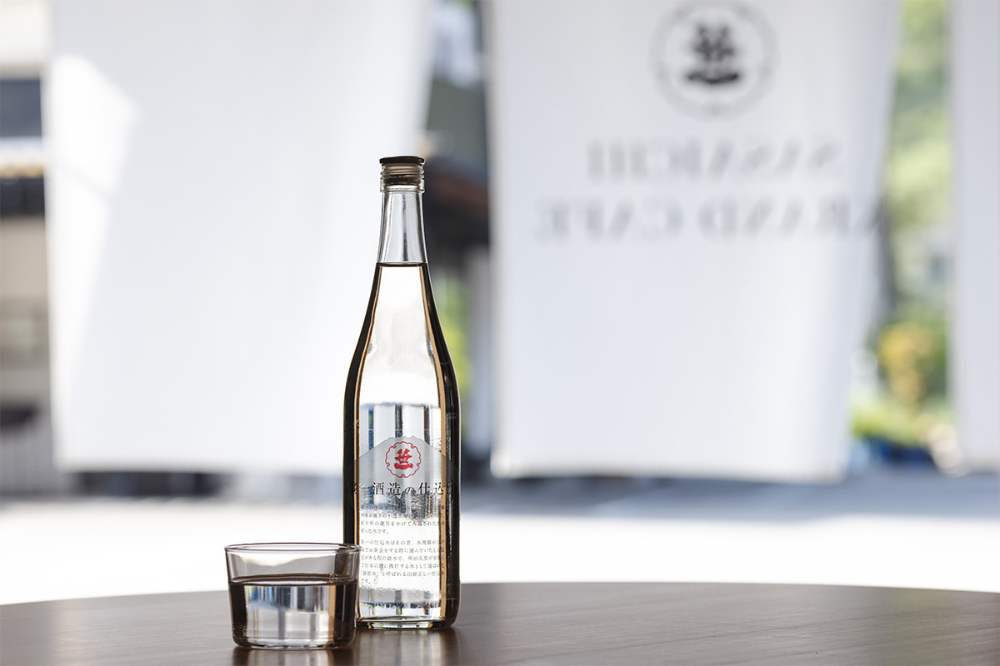
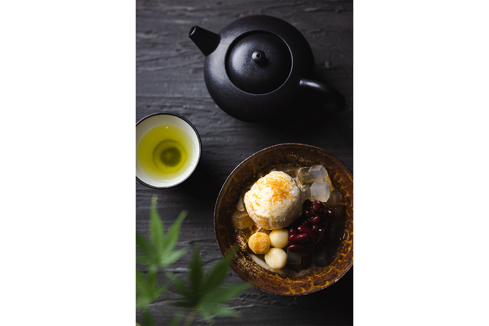

Префектура Яманаси · Оцуки · еда
SASAICHI KRAND CAFE: десерты из сакэ без капли алкоголя при старой сакэварне в Оцуки

Сакэварня «Сасаити» в Оцуки ведёт историю с 1661 года и стоит у самого въезда в префектуру Яманаси. При ней работает кафе, где всё меню безалкогольное, но почти в каждом блюде есть что-то от сакэ: сакэ-касу, амадзакэ или вода, на которой здесь ставят сакэ.
Сакэварня
Триста шестьдесят лет у дороги в Яманаси

История «Сасаити» начинается с дома «Ханадая», основанного в 1661 году. В 1919 году его дело по варке сакэ перешло к «Сасаити», и с тех пор сакэварня работает в Оцуки, городе на востоке префектуры, который встречает всех, кто едет в Яманаси. Для японских сакэварен «Сасаити» редкий случай: кроме сакэ здесь делают вино и сётю, и награды у неё есть не только за сакэ, но и за вино.
На территории сакэварни два места для гостей. В «Сюю-кане» можно спокойно попробовать сакэ: у дегустационной стойки есть платные и бесплатные позиции, а в галерее рассказывают о культуре сакэ. Рядом стоит SASAICHI KRAND CAFE, кафе, где в меню идут сакэ-касу (выжимки, которые остаются после отжима сакэ) с этой же сакэварни и та самая вода, на которой здесь ставят сакэ.
Кафе
Сакэ для тех, кто не пьёт

Вся вода в кафе, от кофе до десертов, взята из того же источника, что идёт на сакэ: у неё мягкий, округлый вкус. Остальные продукты по возможности местные, из Яманаси. Например, белые шарики сиратама здесь лепят с тофу «Хаккай», который делают у Осино Хаккай, группы родниковых прудов у подножия Фудзи.
Еда и сладости в кафе без алкоголя, поэтому сюда спокойно приходят и те, кто не пьёт, и семьи с детьми. Именно для них кафе и задумано: показать культуру брожения, на которой стоит сакэ, тем, кто сакэ не пьёт.
Повод был вполне практический. Магазин сакэварни в Оцуки стоит у въезда в Яманаси, и гостей у него всегда много. Во время пандемии коронавируса всё больше людей стали приезжать на своих машинах, а водителю пить нельзя. Тогда в кафе, обновлённом в 2019 году, к популярному льду какигори с сакэ-касу добавили сладости из сакэ-касу и амадзакэ, сладкого безалкогольного напитка из риса. Как и положено сакэварне, которая сама работает с сырьём, почти всё делают с нуля и добиваются лёгкого, чистого послевкусия.
Меню
Парфе, анмицу и кофе на воде для сакэ

Весной 2021 года в меню появились три позиции на амадзакэ и этой воде. В центре двух десертов домашнее мороженое из амадзакэ: «Сасаити амадзакэ айсу парфе» и «Сасаити гиндзё куриму анмицу». К мороженому добавляют сиратама, сладкую фасолевую пасту и кубики агар-агара. Упругие шарики и свежий, прохладный агар-агар подчёркивают лёгкий аромат сакэ в мороженом. Алкоголя в десертах нет, из главных аллергенов в них есть молочные продукты. Парфе стоило 1150 иен, анмицу 950 иен (с налогом, цены 2021 года).

Третья новинка, «Сасаити сикоми-мидзу кохи», это кофе, заваренный на воде для сакэ. Вкус у него особенно мягкий и округлый. Зёрна для него обжаривает популярная кофейня AKITO COFFEE из Кофу, столицы префектуры, и обжарку подбирали специально под эту воду. Чашка стоила 500 иен с налогом в 2021 году.
Вода
Вода, которую возили в замок Эдо

Кроме брожения, в кафе держатся двух правил: делать всё по возможности своими руками и везде использовать воду для сакэ. Сиратама часто берут готовыми замороженными, а здесь их лепят из рисовой муки сиратамако с тофу «Хаккай», и шарики выходят упругими и мягкими. На этой же воде варят агар-агар и заваривают кофе. Говорят, эту воду с Фудзи когда-то специально возили на чайные церемонии в замок Эдо, резиденцию сёгунов в нынешнем Токио. Её здесь не жалеют, и потому у сладостей чистое, лёгкое послевкусие.

После дегустации в «Сюю-кане» стоит зайти в кафе: так за одну остановку можно узнать о сакэварне и попробовать продукты Яманаси в виде, который бывает только здесь.
SASAICHI KRAND CAFE
- Адрес
- префектура Яманаси, Оцуки, Сасаго-мати, Ёсикубо, 26
- Часы работы
- будни 11:00–16:00 (последний заказ 15:30), суббота, воскресенье и праздники 10:00–16:00 (последний заказ 15:30)
- Выходные
- без выходных
- Сайт
- sasaichi.co.jp
«Сюю-кан»
- Адрес
- префектура Яманаси, Оцуки, Сасаго-мати, Ёсикубо, 26
- Часы работы
- 9:30–18:00
- Выходные
- без выходных
- Сайт
- sasaichi.co.jp